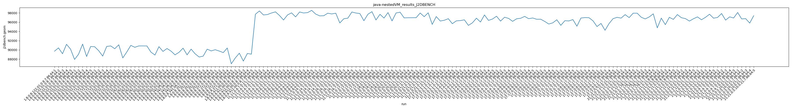
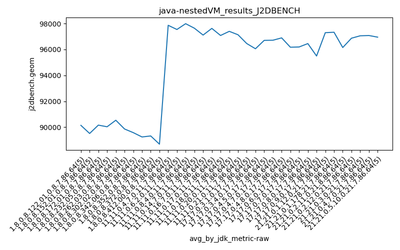
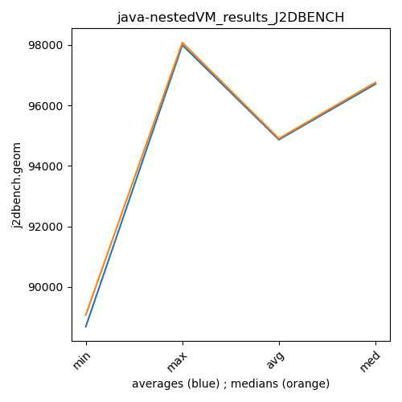

java- J2DBENCH
Context at bottom
/home/jvanek/git/benchmarks-in-nested-virtualisation-toolchain/final_results/nestedVM_results/nestedVM_results_DACAPO
java-
J2DBENCH
/home/jvanek/git/benchmarks-in-nested-virtualisation-toolchain/final_results/nestedVM_results/nestedVM_results_J2DBENCH
java-
J2DBENCH
nestedVM_results_J2DBENCH
final score
Expected number of java- JDKs: 17
1st avgmed_alljdks_metric:
/home/jvanek/git/benchmarks-in-nested-virtualisation-toolchain/final_results/result_processing.py /home/jvanek/git/benchmarks-in-nested-virtualisation-toolchain/final_results/nestedVM_results/nestedVM_results_J2DBENCH j2dbench.geom False
values: [89721, 90434, 89173, 91206, 90172, 87938, 89074, 91253, 88575, 90732, 90684, 89836, 88664, 90750, 90862, 90256, 91107, 88269, 89553, 90976, 90564, 90866, 90864, 90858, 89529, 88887, 90700, 89675, 90298, 89743, 88935, 89486, 90374, 88933, 90168, 97716, 98428, 97559, 97654, 97984, 98228, 97436, 96474, 97572, 98011, 97146, 98201, 97988, 98073, 98551, 97751, 97367, 97388, 97934, 97780, 97937, 95835, 96734, 96867, 98193, 97213, 96249, 96410, 96751, 95673, 96283, 96337, 96500, 95305, 95859, 96858, 96033, 97559, 96384, 96682, 97286, 96227, 97064, 96817, 96180, 96728, 96843, 97244, 96753, 96911]

Expected number of iterations: 5
final number of values: 85 out of 85
Pass rate: 100.0%
values: (87938, 98551, 94165.5411764706, 96249)

** accuracy from all jdks and runs
more is better
MIN: 87938
MAX: 98551
AVG: 94165.5411764706
MED: 96249
Relative differences 1:
MIN-MAX: 11.0 %
MIN-AVG: 7.0 %
MIN-MED: 9.0 %
MAX-MIN: -12.0 %
MAX-AVG: -5.0 %
MAX-MED: -2.0 %
AVG-MED: 2.0 %
stored to java-.properties. sort | uniq that!
2nd avgmed_by_jdk_metric:
values: [90141.2, 89514.4, 90159.2, 90032.2, 90536.2, 89860.6, 89579.2, 97868.2, 97544.2, 97991.8, 97644.0, 97113.2, 96459.2, 96056.8, 96703.2, 96714.8, 96895.8]

values: [90172, 89074, 90684, 90256, 90858, 89743, 89486, 97716, 97572, 98073, 97751, 96867, 96410, 96283, 96682, 96817, 96843]

values: (89514.4, 97991.8, 94165.54117647058, 96459.2)
values: (89074, 98073, 94193.35294117648, 96410)

** accuracy from all jdks where runs were avged
more is better
MIN: 89514.4
MAX: 97991.8
AVG: 94165.54117647058
MED: 96459.2
Relative differences 1:
MIN-MAX: 9.0 %
MIN-AVG: 5.0 %
MIN-MED: 7.0 %
MAX-MIN: -9.0 %
MAX-AVG: -4.0 %
MAX-MED: -2.0 %
AVG-MED: 2.0 %
stored to java-.properties. sort | uniq that!
** accuracy from all jdks where runs were medianed
more is better
MIN: 89074
MAX: 98073
AVG: 94193.35294117648
MED: 96410
Relative differences 1:
MIN-MAX: 9.0 %
MIN-AVG: 5.0 %
MIN-MED: 8.0 %
MAX-MIN: -10.0 %
MAX-AVG: -4.0 %
MAX-MED: -2.0 %
AVG-MED: 2.0 %
stored to java-.properties. sort | uniq that!
/home/jvanek/git/benchmarks-in-nested-virtualisation-toolchain/final_results/nestedVM_results/nestedVM_results_RADARGUNs3
java-
J2DBENCH
/home/jvanek/git/benchmarks-in-nested-virtualisation-toolchain/final_results/nestedVM_results/nestedVM_results_SPECJBB
java-
J2DBENCH
/home/jvanek/git/benchmarks-in-nested-virtualisation-toolchain/final_results/nestedVM_results/nestedVM_results_RADARGUNs1
java-
J2DBENCH
/home/jvanek/git/benchmarks-in-nested-virtualisation-toolchain/final_results/nestedVM_results/nestedVM_results_JMH
java-
J2DBENCH
pass rates:
nestedVM_results_J2DBENCH=100.0%
Context:
- nestedVM_results
- J2DBENCH